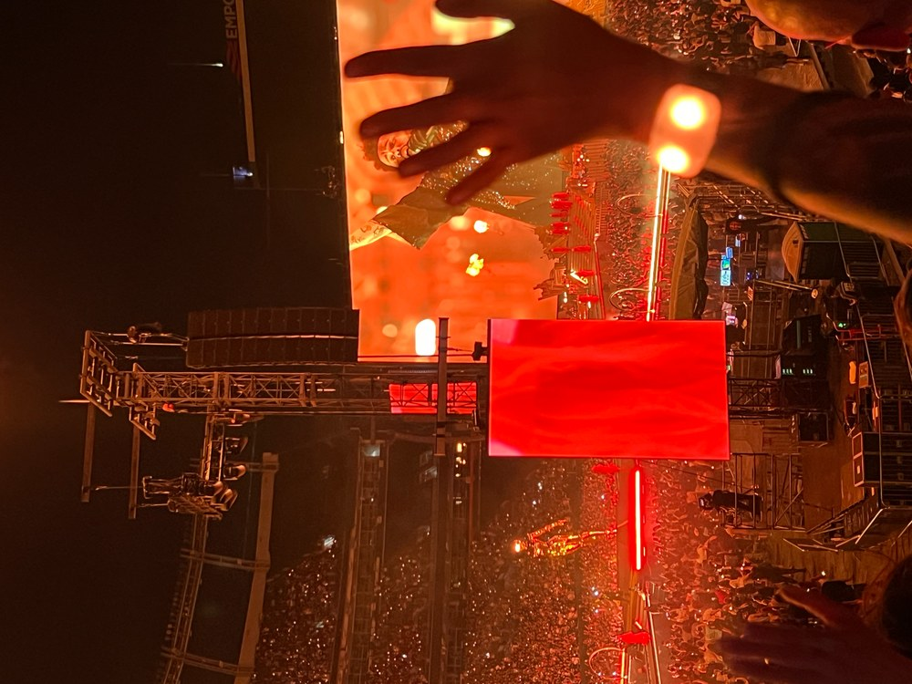

I created The Concert Diaries to share some of my favorite concert experiences. I enjoy all kinds of music and love getting the chance to see different artists perform live.
Over the years, I have been lucky enough to attend several concerts. Each one has been different and has given me memories that I will always remember.
One thing I love about going to concerts is being able to experience so many different styles of music. From rock bands like Journey and Def Leppard to pop artists like Ariana Grande and Tate McRae, every performance has something unique to offer.
Below is a picture I took at The Weeknd's concert!

Visit Utah State University to learn more about education.
© 2026 The Concert Diaries. All rights reserved.
Email: concertdiaries@example.com